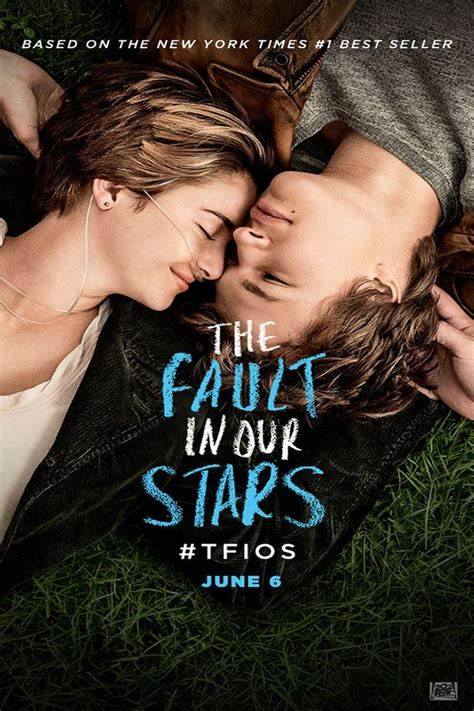

The Fault in Our Stars

Író: John GreenKiadás:2012
John Green "The Fault in Our Stars" egy ifjúsági regény, mely Hazel Grace Lancaster és Augustus Waters történetét meséli el. Mindketten rákbetegséggel küzdenek, és a regény a szeretet, elvesztés és az élet értelmének témáit boncolgatja.
John Green

Foglalkozása: Író Született:1977
John Green amerikai író és videóblog-író. Legismertebb művei közé tartoznak a fiatal felnőttek számára írt regények, amelyek széles körben elismertek és népszerűek lettek fiatal olvasók és felnőttek körében egyaránt.